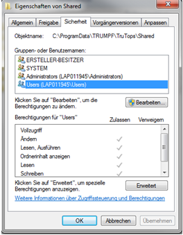
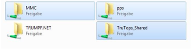
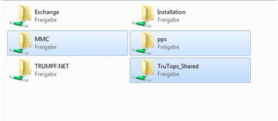

Shared foldersÂ
For TruTops Boost, the release _TruTops_Shared_ is created on the server. By default, this release refers to the folder %ProgramData%\Trumpf\TruTops\Shared on the server. However, the folder can also be defined at a different storage location during the installation. Modification rights are assigned to users for this folder. The rights are inherited by the sub-folders.Â

The MMC and pps network releases are also created. No additional rights have to be granted because the two folders are under the TruTops folder. The MMC release includes the released BNC programs and the setup plans in each of the corresponding machine folders. The machine folders should then be connected on the respective machine for access to the NC data. The pps folder is released for the data exchange of Fab.Â
 
